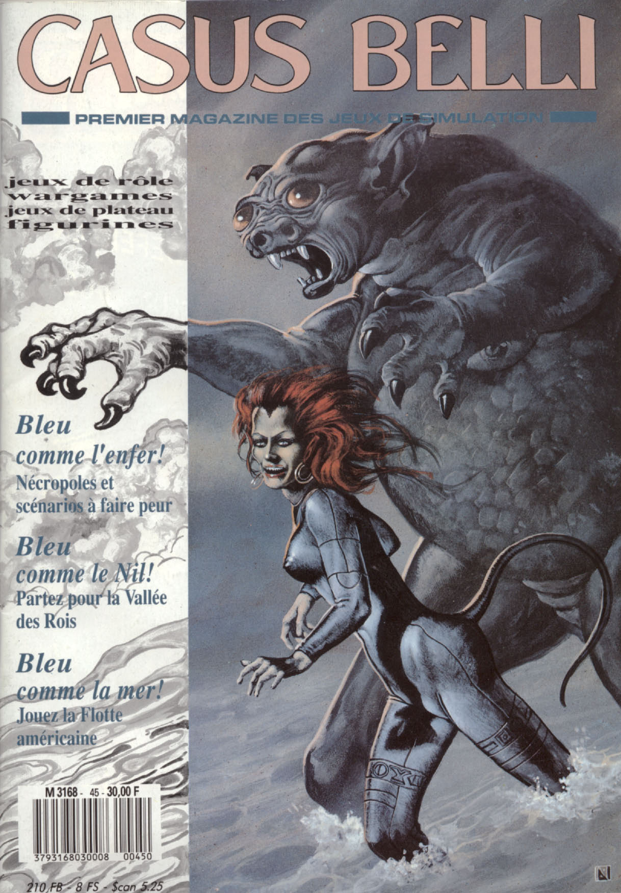

Et c’est donc parti pour le CB 45 sorti pour mai – juin 1988.

Comment va le monde à cette période ? En France, l’actualité est surtout occupée par la victoire – écrasante – de Tonton alors que le pays est en cohabitation depuis deux ans. Les élections législatives se déroulent donc dans la foulée, pour imposer Rocard comme Premier Ministre. Je laisse aux politologues connaissant bien la gauche ou à ceux qui avaient déjà une lecture très fine de l’actualité politique de l’époque pour commenter ce choix surprenant de Mitterrand alors que les deux hommes se détestaient cordialement, et que ceci va empoisonner leur relation pendant toute la durée du mandat de Rocard (peut-être un plaisir florentin de Mitterrand après avoir brisé Chirac ? 😄 )
Plus réjouissant, nous n’aurons plus au journal télévisé les portraits et la durée de détention des derniers otages du Liban puisque ceux-ci auront été libérés début mai suite à des tractations dignes d’une partie sordide de Diplomacy
ler:

Spoiler:
Alors que l’été pointe dans l’Hexagone, son début va être marqué par une catastrophe ferroviaire majeure : l’accident de la Gare de Lyon - https://fr.wikipedia.org/wiki/Accident_ferroviaire_de_la_gare_de_Lyon
Ailleurs dans le monde, le Rideau de Fer continue à craqueler même si les déchirures semblent encore minimes. La Hongrie qui va être, ironie de l’Histoire quand on regarde son évolution actuelle, le premier pays à s’affranchir de la chape de Fer change de Secrétaire Général du Parti Communiste, ce qui va insuffler d’autres changements à venir dans l’appareil d’Etat pour aboutir au dénouement qu’on connaît (on en reparle dans les mois à venir 😄 ). La Pologne s’agite de même, et même l’Empire Soviétique commence à chanceler même si tout cela reste encore très étouffé : Arménie et Azerbaïdjan avec le Haut-Karabagh, Estonie (!) qui est aussi une RSS, et le début du retrait de l’Armée Rouge d’Afghanistan.
Dans les initiatives encore très confidentielles mais qui modèlent notre époque actuelle, on pourra relever la mise en place du Comité Delors chargé de préparer, pour une décennie après, l’Union Economique et Monétaire au sein de la CEE, et une audition devant le Congrès Américain qui ouvre le sujet du réchauffement climatique : https://www.herodote.net/23_juin_1988-evenement-19880623.php
Et dans Casus, quoi de neuf les zami(e)s ? Après la couverture signée Jean-Michel Nicollet (qui connaissait déjà bien ?), ce numéro est ponctué par quelques informations primoridales. Dans l’encart central : le premier CB Echo (qui sera ensuite courageusement dépouillé par @Tristan ) et le lancement du 3615 Casus. Eh ouais !
Spoiler:
Et ensuite la présentation de la collection des crapougnats officiels pour noter les Epreuves du Feu réalisées : collector et inoubliable !
Spoiler:
Sur les informations plus prosaïques, on retrouvera un long debriefing 3ème Salon des Jeux de Réflexion qui comme pour les éditions précédentes – et aussi celles à venir – se lamente sur le couplage avec le Salon de la Maquette, et le manque d’accessibilité et de visibilité de la partie Jeux… Cela n’empêche pas un sympathique débriefing où on retrouvera un florilège de photos p. 7 des différents vainqueurs et -queuses (si, si !) des tournois, en compagnie de Greg Stafford et Sandy Petersen qui étaient les invités d’honneur de cette édition (+ une mini-interview des deux quidams où un Sandy peu visionnaire prédit 3-4 systèmes de règles génériques qui limiteront l’offre à l’avenir).
Spoiler:
Le Barbare fait de son côté un commentaire nettement moins amène sur le Salon pour fustiger déjà les beaufs rôlistes de l’époque qui donnent une sale image du loisir et ont malmené Valérie Tourre, la secrétaire d’alors de Casus Belli…
Avec ce numéro, CB inaugure une rubrique courrier des lecteurs : on pourra y lire avec réjouissance une lettre VCI qui se lamente déjà en cette année 1988 de la disparition du Bon Vieux Temps et que Casus n’est décidément plus Casus… ou dans les réponses de Casus l’espoir qu’un jour des Hors-Séries puissent paraître, ainsi qu’une BD Kroc Le Bô (Casus quand même plus visionnaire que Sandy Petersen !).
Je passe rapidement sur le Revue de Presse rôliste et assimilée d’André Foussat pour juste m’arrêter sur un détail insolite avec la revue du n°11 de Chroniques d’Outre-Monde, où on lit manifestement déjà un débat (les JDR dits totalitaristes par Fang) sur ce qui a tendance aujourd’hui à déclencher les shitstorm autour des clichés medfan, et leur portée avérée ou non de thèmes racistes. Si quelqu’un a le numéro, je serai curieux de lire ce papier pour voir comment ces questions étaient déjà soulevées (et où André Foussat commente déjà avec un très prémonitoire « il est interdit de nourrir les demi-orcs, merci » alors qu’on est une décennie avant Internet, ses forums de discussion et ses futurs trolls).
Sur les rubriques Inspis Bouquins et BD, je les ai trouvées cette fois-ci assez peu inspirantes : Clive Barker est mis à l’honneur car son nom commence à être connu avec la sortie de Hellraiser, et Roland Wagner nous rappelle qu’il a d’abord été auteur (son livre Le Jeu de la Damnation est ici mis en avant) ; sur la partie BD, on trouvera les sorties du bimestre du Percevan, Le Grand Pouvoir du Chinkel ou les Cités Obscures, mais rien dans ce qui me faisait vibrer alors dans mes lectures.
L’inspi Ciné prend cette fois-ci 4 pages : d’abord pour débriefer de différents festivals de films, mais aussi mettre (très) en avant le film Prison. Là encore, comme pour The Hidden, je vais publiquement révéler mon ignorance crasse dans le 7ème Art, mais qui se souvient de ce qui semble être un nanar ? Au moins le rédacteur Wolverine de CB, puisqu’en plus d’en faire une critique rapide dithyrambique, on est gratifié d’une interview du scénariste et de deux pages ultra-linéaires proposant de rejouer le film avec Chill. Tout ceci semble à côté de la plaque, et on était d’ailleurs plus très loin de la disparition de cette rubrique de plus en plus incongrue. Allez, je vous mets la bande annonce du film pour vous faire une première idée :
Il est temps de regarder les parutions et critiques de cette période pré-été. Après s’être longtemps investi dans la production locale un peu cryptique (Légendes…), Jeux Descartes sort désormais la grosse artillerie avec cette année 1988 : après la sortie de Star Wars, ce sont maintenant James Bond et Warhammer qui sont annoncés. Nouveau sur le marché, Oriflam tente de s’imposer comme challenger : après Runequest, c’est Hawkmoon qui suit pour une parution prochaine. Siroz Productions et CROC sont encore deux entités distinctes et mineures, le premier avec la sortie prochaine de Berlin XVIII comme supplément Universom et le second qui produit du matériel pour Bitume. Quant à Transecom, on semble assister au prochain chant du cygne avec une apothéose : le Manuel des Monstres pour AD&D1 (enfin !), les deux premiers Gazeteers pour D&D / Mystara et les premiers modules pour Dragonlance (les traductions pour ces deux séries étant ensuite avortées – grosse grosse tristesse). Enfin, et coucou à notre année 2023, Dragon Radieux sort à ce moment l’Atlas de Trégor !
Et de l’autre côté de la Manche et de l’Atlantique, les présences de Stafford et Petersen semblent respectivement produire une traditionnelle intox avec un supplément World of Glorantha annoncé et jamais paru chez Avalon Hill, et une info avec la version de travail des Monstres de Cthulhu chez Chaosium. Games Worskhop continue à faire du JDR avec le volet Le Pouvoir Derrière le Trône, mais CB prend aussi acte avec ce numéro du resserrement de l’éditeur autour de ses produits, et que White Dwarf termine sa mue comme étant la Pravda du Parti… Ca sent la fin… La gamme GURPS commence à tisser sa toile, ce qui inspire peut-être la prédiction de Sandy Petersen, mais le front américain est calme dans son ensemble, en attente de la tenue de la Gen Con en août.
Les critiques ne recensent quasiment que du bon qui fait saliver encore aujourd’hui : le jeu de plateau Mai 68 (avec 20 ans d’écart avec les événements seulement - ou déjà comme le titre l’article), Empires & Dynasties, Les Années Folles pour Cthulhu, la nouvelle édition de Traveller depuis son édition d’origine et baptisée Megatraveller, Trauma, Le Manuel des Monstres pour AD&D1 (qui se fait gentiment dézinguer), des suppléments GURPS pour Car Wars (ou l’inverse) pour décrire le monde d’Autoduel, les Règles Avancées pour l’Oeil Noir, Battletech ou encore Brittania. Une fois que je vous ai énoncé tout ceci, vous pouvez aller vous ruer sur les fils de vente bande de saloupiaux !! A côté de toutes ces Têtes d’Affiche, l’Epreuve du Feu est consacrée à La Vallée des Rois dans la gamme Premières Légendes et qui semble clôturer donc une certaine ère de production française chez Descartes. Critique assez atypique (et réussie !) car rédigée par Isabelle Bourdial qui travaillait alors aussi chez Excelsior, manifestement chez Science & Vie d’en face, et probablement sollicitée pour son regard académique par rapport au travail très encyclopédiste de la Vallée des Rois (très bon souvenir au demeurant de ce jeu, mais il y a en effet des pages et des pages de règles !).
Le désormais établi encart Scénarios en propose 4, mais avec la nouvelle formule (et pour pas très longtemps il me semble), les Epreuves du Feu sont aussi accompagnées d’un mini scénario bonus destiné à faire découvrir facilement le jeu. Je recommande donc chaudement celui ici proposé pour La Vallée des Rois qu’on pourra utiliser pour un Kémi plus actuel, ou d’autres jeux autour de l’Egypte antique (avec les suppléments Egypte pour Rolemaster ou GURPS - @Tybalt (le retour) est-ce que j’en ouble ?).
Les 4 autres scénarios sont respectivement AD&D avec toujours du Laelith et du Denis Beck, et du toujours republié depuis dans le Recueil de BBE (Huis-Clos en Enfer, un quasi exercice de style très orienté horreur / terreur et qui mérite d’être lu), un Cthulhu et un Paranoïa de respectivement Pierre Lejoyeux et Tristan alors qu’on aurait attendu plutôt le sens inverse 😄 : le Cthulhu est prévu pour Gaslight et même s’il ne m’a pas emballé, c’est suffisamment rare pour mériter le coup d’œil ; et dans le Paranoïa de Tristan, on trouvera un soupçon de Lovecrafterie – ouf, la morale est sauve ! Enfin, un scénario Chill atypique, qui préfigurait Nautilus et récupéré d’un scénario de convention, qui confirme l’adage que les scénarios de convention étaient en général quand même pas fameux (mais on a un très joli plan du Nautilus).
Maintenant que la pagination a augmenté, on a aussi désormais le droit à une rubrique Jeu de Plateau où sont chroniqués deux jeux. The Fury of Dracula de Games Workshop, dernières preuves de la diversification de cet éditeur UK avant que le business des figurines ne prennent définitivement le dessus. Sur la critique d’André Foussat, le jeu n’a pas l’air non plus inoubliable et son illustration de couverture est d’une rare laideur (mais le matériel intérieur a l’air en revanche de toute beauté !). Et Guillotine, la production française qu’on avait déjà évoquée et qui anticipait les célébrations qu’on allait avoir l’année suivante pour le bi-centenaire de la Révolution Française. Là encore, et même si Frank Stora était connu pour ses critiques très bienveillantes, le jeu ne semble pas mériter d’aller le dénicher à tout prix…
La partie Wargames est consacrée à la guerre navale moderne avec un très bon dossier, qui comprend une revue complète de la série Fleet (Second, Sixth, Seventh) de Victory Games, et un scénario au large de la Lybie pour aller chatouiller la barbe de Khadafi puisqu’on est encore proche du conflit entre la Lybie et le Tchad à cette période. En complément, diverses autres choses sympathiques :
- La suite des articles de Jean-Baptiste Dreyfus sur la planification : c’est technique et synthétique (1 pages) et je trouve ceci encore excellent
- Une critique de Guet Apens, un jeu de figurines médiévales historiques de Jean-Jacques Petit avec des décors à monter en 3D qui n’aura pas percé entre ce qui existait avec Cry Havoc et Warhammer…
- Un scénario ASL Mai 1945 avec un affrontement… soviétiques contre américains ! Même si la parenthèse de la Guerre Froide est en train de se refermer, elle reste encore d’actualité dans les esprits de cette année 1988
On termine avec ceci pour se donner donc très vite rdv pour le numéro 46, été 1988 !